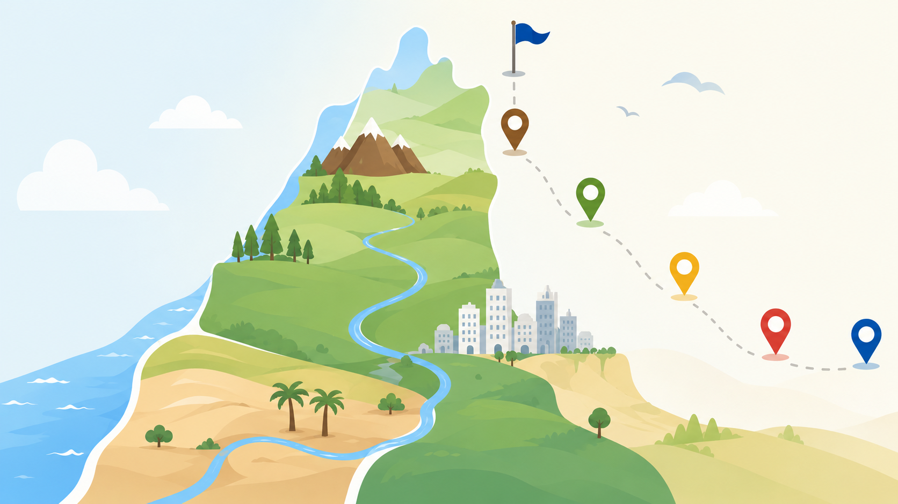

1
נחלי ישראל
נחקור את מערכת הנחלים, כיווני הזרימה וקו פרשת המים.
יוצאים למסע דיגיטלי בין נחלים, ערים, אתרי מורשת, יישובי ספר ורכסי הרים.

כל תחנה תיפתח לאחר השלמת התחנה הקודמת.
נחקור את מערכת הנחלים, כיווני הזרימה וקו פרשת המים.
נבין כיצד עיר הופכת למרכז אזורי ולמה מיקומה חשוב.
נכיר מקומות שמספרים את סיפור הארץ והחברה.
נחקור את החיים, האתגרים והחוסן של יישובים סמוכי גבול.
נכיר את רכסי ההרים ואת השפעתם על האקלים וההתיישבות.
נחקור את מערכת הנחלים, כיווני הזרימה וקו פרשת המים.